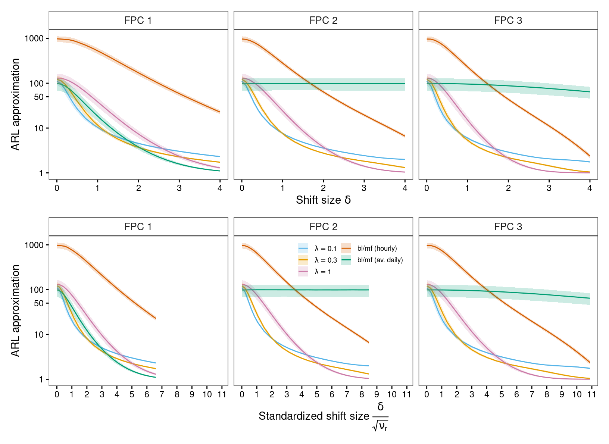

![]()
start_time <- Sys.time()Load libraries
# Package names
packages <- c("benchmarkme", "dplyr", "forcats", "funData", "ggplot2",
"patchwork", "tidyr")
# Install packages not yet installed
installed_packages <- packages %in% rownames(installed.packages())
if (any(installed_packages == FALSE)) {
install.packages(packages[!installed_packages])
}
# Packages loading
invisible(lapply(packages, library, character.only = TRUE))
theme_set(theme_bw() +
theme(panel.grid.major=element_blank(),
panel.grid.minor=element_blank(),
strip.background=element_rect(fill="white"),
strip.text=element_text(size=10, face="bold"),
plot.title=element_text(hjust=.5),
axis.text.x = element_text(color="black"),
axis.text.y = element_text(color="black"),
axis.ticks = element_line(color = "black")
)
)
mcb <- c("#D55E00", "#56B4E9", "#E69F00", "#009E73", "#CC79A7")
LABS <- lapply(c(0.1, 0.3, 1.0), function(i) bquote(lambda==.(i)))
std_shift <- function(i) sqrt(exp(-(i+1)/2))RUNS <- 1:100
DIR <- "data/simulations/"
df1 <- purrr::map_df(paste0(DIR,"MEWMA_ARL_r_", 0.1 ,
"_N_300_RUN_", RUNS, ".rds"), readRDS) |>
group_by(EFI, delta_vec) |>
mutate(AARL=mean(ARL), stdARL=sd(ARL), EFI=factor(EFI)) |>
ungroup()
df2 <- purrr::map_df(paste0(DIR,"MEWMA_ARL_r_", 0.3 ,
"_N_300_RUN_", RUNS, ".rds"), readRDS) |>
group_by(EFI, delta_vec) |>
mutate(AARL=mean(ARL), stdARL=sd(ARL), EFI=factor(EFI)) |>
ungroup()
df3 <- purrr::map_df(paste0(DIR,"MEWMA_ARL_r_", 1 ,
"_N_300_RUN_", RUNS, ".rds"), readRDS) |>
group_by(EFI, delta_vec) |>
mutate(AARL=mean(ARL), stdARL=sd(ARL), EFI=factor(EFI)) |>
ungroup()bind_rows(df1, df2, df3, .id="KAPPA") |>
select(ARLSE) |>
filter(ARLSE==max(ARLSE))# A tibble: 1 × 1
ARLSE
<dbl>
1 2.64p1 <- bind_rows(df1, df2, df3, .id="LAMBDA") |>
mutate(LAMBDA=factor(LAMBDA, labels=LABS)) |>
ggplot(aes(x=delta_vec, y=AARL, group=LAMBDA, colour=LAMBDA, fill=LAMBDA)) +
geom_line() +
geom_ribbon(aes(ymin=AARL-stdARL, ymax=AARL+stdARL), alpha=.2, colour=NA) +
labs(y="ARL approximation", x=bquote(Shift~size~delta)) +
scale_y_log10(breaks=c(1, 10, 50, 100)) +
facet_wrap(~EFI, labeller=label_bquote(cols=FPC~.(EFI))) +
scale_colour_manual(values = mcb[c(2,3,5)], labels=LABS) +
scale_fill_manual(values = mcb[c(2,3,5)], labels=LABS) +
theme(legend.position="inside", legend.position.inside=c(.9,.7), legend.title=element_blank())p2 <- bind_rows(df1, df2, df3, .id="LAMBDA") |>
mutate(LAMBDA=factor(LAMBDA, labels=LABS),
std_shift=delta_vec/std_shift(as.numeric(EFI))) |>
ggplot(aes(x=std_shift, y=AARL, group=LAMBDA, colour=LAMBDA, fill=LAMBDA)) +
geom_line() +
geom_ribbon(aes(ymin=AARL-stdARL, ymax=AARL+stdARL), alpha=.2, colour=NA) +
labs(y="ARL approximation",
x=bquote(Standardized~shift~size~frac(delta, sqrt(nu[r])))) +
scale_y_log10(breaks=c(1, 10, 50, 100)) +
scale_x_continuous(breaks=c(1:11)) +
facet_wrap(~EFI, labeller=label_bquote(cols=FPC~.(EFI))) +
scale_colour_manual(values = mcb[c(2,3,5)], labels=LABS) +
scale_fill_manual(values = mcb[c(2,3,5)], labels=LABS) +
theme(legend.position="none", legend.title=element_blank())p1 + p2 + plot_layout(ncol=1)
Computational and session information
Hardware information:
get_cpu()$vendor_id
[1] "GenuineIntel"
$model_name
[1] "Intel(R) Core(TM) i7-8565U CPU @ 1.80GHz"
$no_of_cores
[1] 8get_ram()16.4 GBComputation time:
print(paste("Computation time:", round(Sys.time() - start_time, 2)[[1]], "seconds"))[1] "Computation time: 4.2 seconds"Session information:
sessionInfo()R version 4.3.1 (2023-06-16)
Platform: x86_64-pc-linux-gnu (64-bit)
Running under: Debian GNU/Linux 11 (bullseye)
Matrix products: default
BLAS: /usr/lib/x86_64-linux-gnu/openblas-pthread/libblas.so.3
LAPACK: /usr/lib/x86_64-linux-gnu/openblas-pthread/libopenblasp-r0.3.13.so; LAPACK version 3.9.0
locale:
[1] LC_CTYPE=en_GB.UTF-8 LC_NUMERIC=C
[3] LC_TIME=en_GB.UTF-8 LC_COLLATE=en_GB.UTF-8
[5] LC_MONETARY=en_GB.UTF-8 LC_MESSAGES=en_GB.UTF-8
[7] LC_PAPER=en_GB.UTF-8 LC_NAME=C
[9] LC_ADDRESS=C LC_TELEPHONE=C
[11] LC_MEASUREMENT=en_GB.UTF-8 LC_IDENTIFICATION=C
time zone: Europe/Berlin
tzcode source: system (glibc)
attached base packages:
[1] stats graphics grDevices utils datasets methods base
other attached packages:
[1] tidyr_1.1.2 patchwork_1.2.0.9000 ggplot2_3.5.1
[4] funData_1.3-8 forcats_1.0.0 dplyr_1.1.2
[7] benchmarkme_1.0.8
loaded via a namespace (and not attached):
[1] Matrix_1.5-3 gtable_0.3.4 jsonlite_1.8.8
[4] compiler_4.3.1 tidyselect_1.2.0 stringr_1.4.0
[7] parallel_4.3.1 scales_1.3.0 yaml_2.3.8
[10] fastmap_1.1.1 lattice_0.20-45 benchmarkmeData_1.0.4
[13] R6_2.5.1 labeling_0.4.3 generics_0.1.3
[16] knitr_1.45 iterators_1.0.13 htmlwidgets_1.6.4
[19] tibble_3.2.1 munsell_0.5.1 pillar_1.9.0
[22] rlang_1.1.3 utf8_1.2.4 stringi_1.5.3
[25] xfun_0.43 doParallel_1.0.17 cli_3.6.2
[28] withr_3.0.0 magrittr_2.0.3 digest_0.6.35
[31] foreach_1.5.1 grid_4.3.1 rstudioapi_0.13
[34] lifecycle_1.0.4 vctrs_0.6.5 evaluate_0.23
[37] glue_1.7.0 farver_2.1.1 codetools_0.2-19
[40] abind_1.4-5 colorspace_2.1-0 fansi_1.0.6
[43] purrr_1.0.2 rmarkdown_2.26 httr_1.4.7
[46] tools_4.3.1 pkgconfig_2.0.3 htmltools_0.5.8.1 Reuse
Citation
BibTeX citation:
@online{wittenberg2024,
author = {Wittenberg, Philipp and Neumann, Lizzie and Mendler,
Alexander and Gertheiss, Jan},
title = {Covariate-Adjusted {Functional} {Data} {Analysis} for
{Structural} {Health} {Monitoring}},
date = {2024-10-07},
doi = {10.48550/arXiv.2408.02106},
langid = {en}
}
For attribution, please cite this work as:
Wittenberg, Philipp, Lizzie Neumann, Alexander Mendler, and Jan
Gertheiss. 2024. “Covariate-Adjusted Functional Data Analysis for
Structural Health Monitoring.” arXiv:2408.02106. October 7, 2024.
https://doi.org/10.48550/arXiv.2408.02106.